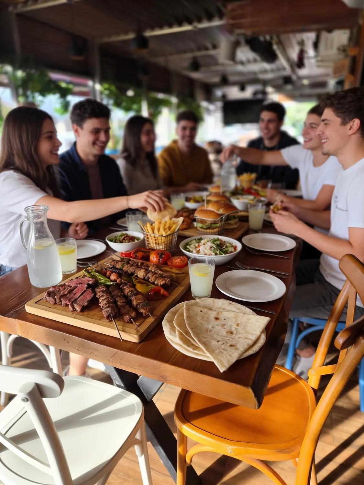
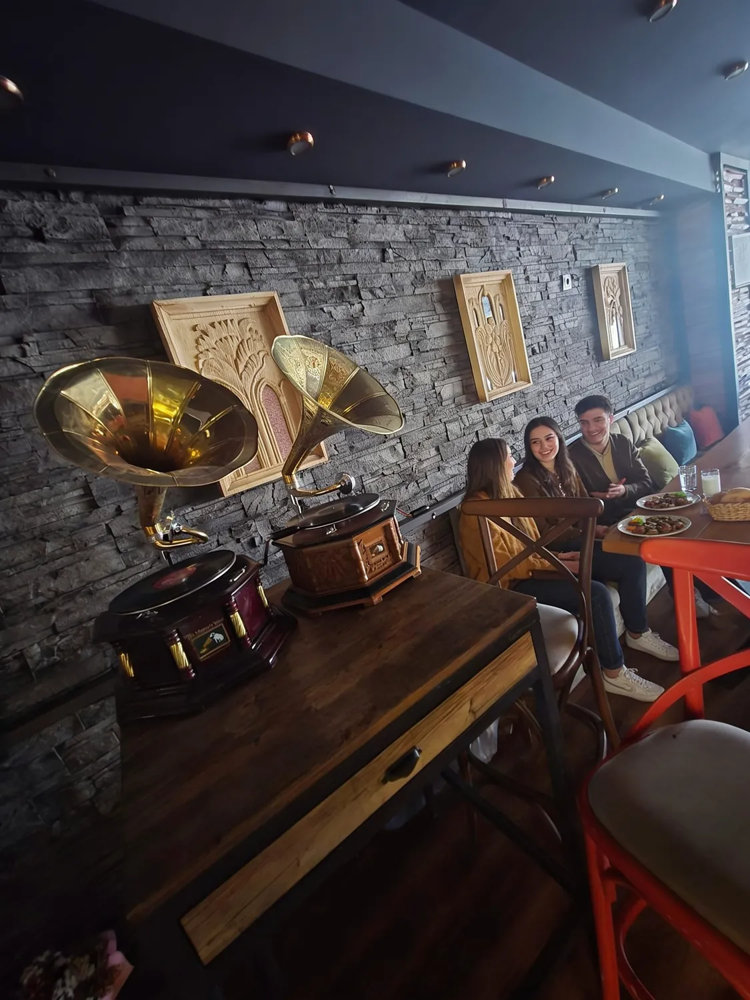
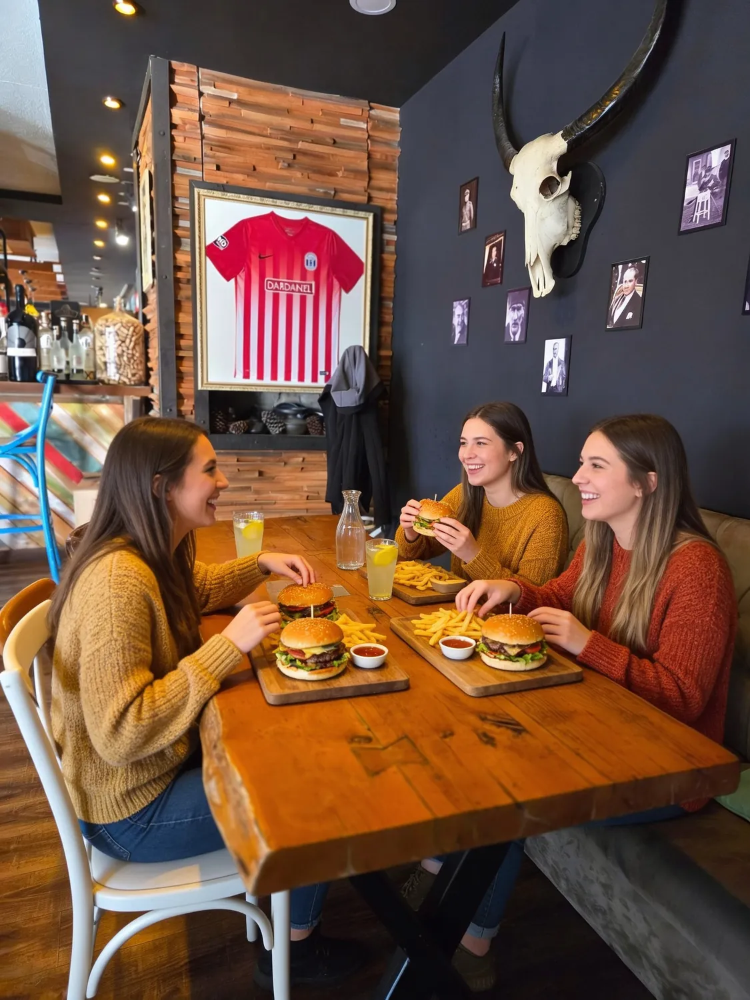
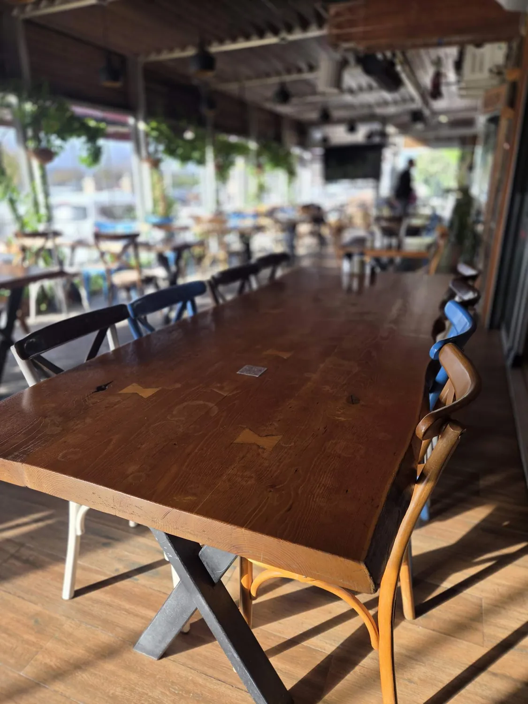
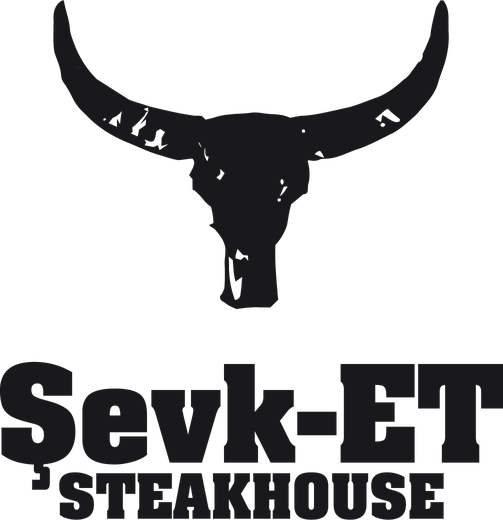

Şevk-ET
Şevk-ETKasabınsofrası.
Çiftlik, kasap ve restoran aynı ailenin. Besiyi biz yetiştirir, eti biz keser, biz pişiririz.

Çiftlik, kasap, sofra
Üçü de aynı ailenin. Dededen toruna kalan kalite buradan gelir: et, çiftlikten tabağa kadar elimizden hiç çıkmaz.

Çiftlik
Besiyi Şevket Çiftliği’nde kendimiz yetiştiririz. Kurban döneminde kurbanlık ve hisse için çiftliği arayın: 0533 607 49 92.

Kasap
Et kendi tezgâhımızda kesilir, dinlendirilir. Köfte, sucuk ve sosis de burada yapılır. Kasap: 0286 217 72 26.

Sofra
Yemekler mevsimin malzemesiyle hazırlanır, ateşten çıkar çıkmaz servis edilir. Masa için: 0286 213 09 08.
Hangi parça, hangi tabak
Bir kasabın menüsü hayvanın üstünden okunur. Bir kesime dokunun, o parçadan çıkan tabakları görün.
Kaç gram yersiniz?
Kasapta et gramla konuşulur. Steakler ve kırmızı etler, en büyüğünden en küçüğüne.
- Ottoman Steak750–800 gr3.900 ₺
- Porterhouse Steak600–650 gr3.400 ₺
- T-bone Steak450–500 gr2.900 ₺
- Dallas Steak450–500 gr2.900 ₺
- Dana Pirzola350–400 gr2.450 ₺
- Şevket Special350 gr, iki kişilik2.500 ₺
- Newyork Steak300 gr2.200 ₺
- Dana Şaşlık250 gr1.300 ₺
- Dana Antrikot220 gr1.300 ₺
- Dana Lokum200 gr1.300 ₺
- Fillet Mignon200 gr1.300 ₺
- Şevket Kobe200 gr2.200 ₺

Dolapta bekler, tezgâhta kesilir
Terastaki dry aged dolabı süs değil. Kemikli parçalar burada dinlenir, lezzeti yoğunlaşır.
Eve götürmek isterseniz kasap bölümünü arayın: köfte, sucuk, sosis ve istediğiniz kesim hazırlanır.
Kütük masa, gramofon, teras
İçeride taş duvar ve kapitone sedirler, dışarıda sarmaşıklı cam teras. İki kişi de gelseniz, on kişi de gelseniz yer var.





Maç akşamları
Süper Lig ve Avrupa maçları ekranda. Maç günü gelmeden önce arayın.
Kalabalık sofralar
Toplu rezervasyonlar için en az bir gün önce arayın. Büyük gruplarda fasıl ekibi de isteyebilirsiniz.
Masanızı ayırtın
0286 213 09 08Rezervasyon yaptırın ya da hemen uğrayın. Toplu rezervasyonlar için lütfen en az bir gün öncesinden arayın.

ADİSYON DEĞİL, ADRES- ADRES
- Barbaros Mah. Aziziye Cad. Eriş Sok. No: 87-89, Çanakkale 17100
- SAAT
- Her gün 10.30 – 23.00
- STEAKHOUSE
- 0286 213 09 08
- KASAP
- 0286 217 72 26
- ÇİFTLİK
- 0533 607 49 92
- @sevketkasapsteakhouse
AFİYET OLSUN